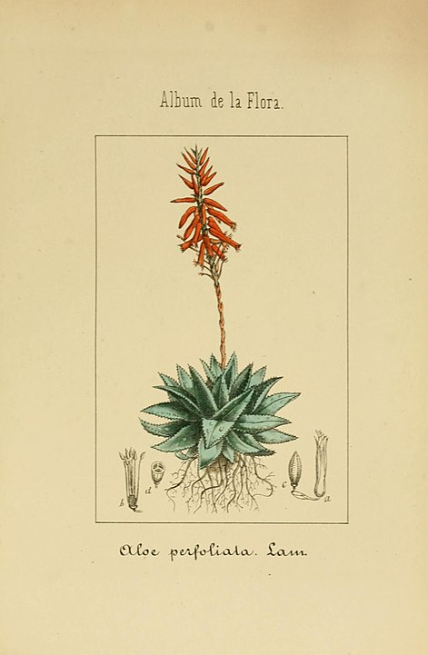

Ало́э (лат. Áloë) — род суккулентных растений семейства Асфоделовые (Asphodelaceae) подсемейства Асфоделовые (Asphodeloideae), содержащий более 550 видов, распространённых в Африке и на Аравийском полуострове. Ранее род Алоэ относили к семействам Алоевые (Aloaceae) и Ксанторреевые (Xanthorrhoeaceae)
Род Алоэ объединяет многолетние листовые, травянистые, кустарниковые или древовидные ксерофиты и суккуленты.
Короткий стебель (или ствол) усажен толстыми мясистыми мечевидными листьями, собранными в густые розетки и расположенными в них по спирали. У некоторых видов листья достигают 60 см длины. Края листьев могут быть гладкими или зубчатыми, усаженными по краю острыми шипами или мягкими ресничками. Листья могут накапливать большое количество воды, значительно увеличиваясь в размерах. Листья закрывают поры, что предупреждает испарение воды при недостаточном ее поступлении извне. Мякоть листа разделена на характерные ячейки, сохраняющие запасы влаги во время засухи. При длительной засухе визуально уменьшается размер листьев за счет израсходования резерва влаги. Также в неблагоприятных условиях растение сбрасывает нижние листья с целью сохранить жизнь.
Цветки небольшие, трубчатые, белые, красные, жёлтые или оранжевые, расположенные на длинном цветоносе в верхушечной многоцветковой кисти.
В традиционной систематике род выделяли в своё собственное семейство Aloaceae (Алоевые, или Алойные), а иногда причисляли к семейству Лилейные. Близкими родственниками алоэ являются роды Гастерия, Хавортия и Книпхофия, имеющие одинаковый метод роста, часто в быту эти роды тоже называют алоэ. Иногда «американским алоэ» называют агаву американскую (Agave americana), хотя оно относится совсем к другому семейству — Агавовые.